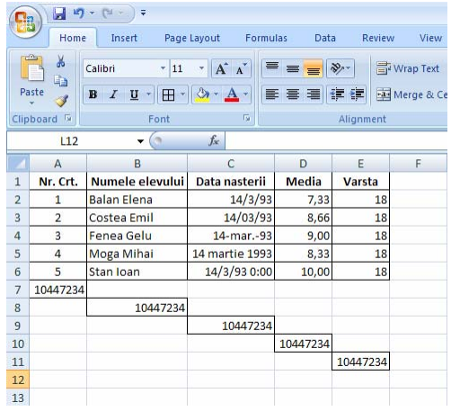

Documente Excel
Fişa Nr.2
Formatarea celulelor.
Microsoft Excel este un program de calcul tabelar.Actuala versiune disponibilă este Microsoft Excel 365 — pentru Windows — şi Microsoft Excel 2016 — pentru Mac OS.
Celula reprezintă componenta fundamentală a unei foi de calcul în Excel.O celulă în Excel este alcătuită din mai multe componente importante, cum ar fi:
- Adresa celulei: reprezintă identificatorul unic al unei celule şi este format din litera corespunzătoare coloanei şi numărul rândului.
- Conţinutul celulei: poate fi un număr, text, o formulă sau o funcţie.
- Formatul celulei: determină modul în care conţinutul este afişat, cum ar fi formatul valutar, formatul dată sau formatul text.
- Stilurile celulei: includ proprietăţi cum ar fi fontul, culoarea de fundal, alinierea şi bordurile.
- Valorile celulelor dependente: dacă o celulă conţine o formulă, aceasta poate folosi valorile celulelor dependente pentru a calcula rezultatul.
1. Selectarea unei celule sau a unui grup de celule adiacente sau neadiacente, a unei linii, a unui rând
O celulă va fi selectată prin simplul click pe aceasta.
Un grup de celule adiacente va fi selectat astfel:
- se execută click pe prima celulă din grup şi se menţine apăsat butonul mouse-ului → se deplasează mouse-ul spre ultima celulă din grup.
- se execută click pe prima celulă din grup şi se menţine apăsată tasta Shift → se execută click pe ultima celulă din grup
Un grup de celule neadiacente va fi selectat astfel: se execută click pe prima celulă din grup şi se menţine apăsată tasta Ctrl → sunt selectate cu click pe fiecare, următoarele celule din grupul vizat.
O coloană(linie) se selectează făcând click pe litera(numărul) acesteia.
Întreaga foaie de calcul se selectează făcând click în stînga sus(cerculeţul roşu) din figura de mai jos.
2. Formatarea celulelor în conformitate cu tipul datelor ce le vor conţine
Se selectează celula → Click dreapta
→ Clic pe Formatare Celule(Format Cells → Datele au un format implicit ce poate fi schimbat selectând opţiunea corespunzătoare tipului de dată, conform listei de categorii din aplicaţie.
Există mai multe moduri de afişare a datelor introduse în celulă:
| General | 33.8 | Excel afişează conţinutul aşa cum este scris de către utilizator |
| Number | 2300.45 (-230.33) | Formatul prestabilit Number are două zecimale. Numerele negative apar scrise în culoare roşie,
între paranteze, precedate de minus |
| Currency | $33,800.45 | Formatul prestabilit are două zecimale şi simbolul dolarului. Numerele negative apar scrise în culoare roşie, în paranteze. |
| Accounting | $ 33,800.45 | Format util pentru a integra simbolul dolarului şi zecimalele în coloană / celulă. |
| Date | 11/21 | Formatul Date prestabilit conţine luna şi ziua separate de un slash; separatorul poate fi modificat după dorinţă. |
| Time | 11:21 | Formatul Time prestabilit conţine ora şi minutele separate prin „:”. |
| Precentage | 35.55% | Formatul prestabilit conţine două zecimale. |
| Fraction | 2/7 | Formatul prestabilit poate reprezenta cel mult o cifră pe fiecare parte a barei. |
| Scientific | 4.54E+06 | Formatul prestabilit conţine două zecimale. |
| Text | 234FG655 | Afişează în celulă atât text cât şi numere |
| Special | 03210 | Este prevăzut pentru afişarea codurilor poştale, nr. de telefon, precum şi a CNP. |
| Custom | 03.210 | Acesta este folosit pentru a crea propriul format numeric. |
3. Formatarea textului: font, dimensiune, stil, culoare, orientare
Se selectează domeniul de celule → Click dreapta
 → Clic pe Formatare Celule(Format Cells) → Pentru a schimba caracteristicile fonturilor utilizăm opţiunile din secţiunea Font. Fereastra afişată conţine opţiunile de tip al caracterelor, dimensiune, stil, culoare, efecte speciale etc.
→ Clic pe Formatare Celule(Format Cells) → Pentru a schimba caracteristicile fonturilor utilizăm opţiunile din secţiunea Font. Fereastra afişată conţine opţiunile de tip al caracterelor, dimensiune, stil, culoare, efecte speciale etc.
Din secţiunea Aliniere(Alignment) se pot alege:
- Aliniere text (Text alignment) - alinierea textului pe orizontală sau verticală
- Orientare(Orientation) - unghiul de înclinare a textului
- (Wrap text) - adaptarea celulei pentru a cuprinde un text ale cărui dimensiuni le depăşesc pe cele ale celulei
- (Shrink to fit) - adaptarea dimensiunilor textului astfel încât să poată fi scris în celulă de mărime normală
- (Merge cells) - reunirea mai multor celule astfel încât să scriem un text pe dimensiunea mai multor celule
Formatarea rapidă a datelor se poate face:
- Selectaţi celula, zona de celule, textul sau caracterele pe care doriţi să le formataţi.
- În fila Pornire (Home), în grupul Font, puteţi stabili următoarele:
- tipul fontului (font face) – ex. Arial
- dimensiunea fontului (font size) – ex. 11

- mărirea dimensiunii fontului (increase font size) -
- micşorarea dimensiunii fontului (decrease font size) -
- îngroşarea fontului (bold) -
- înclinarea fontului (italic) -
- sublinierea fontului (underline) -
- bordurarea tabelului (borders) -
- culoarea de fundal (fill color) -
- culoarea fontului (font color) -
4. Borduri aplicate celulelor.
Se selectează domeniul de celule → Click dreapta
→ Clic pe Formatare Celule(Format Cells) → Din sectiunea Borduri(Border), se alege stilul si culoarea bordurilor ce pot fi aplicate celulelor
5. Copierea sau mutarea conţinutului unei celule.
- În fila Acasă (Home) → în grupul Clipboard → Click pe butoanele Copy(Cut) şi Paste
Pentru a vizualiza conţinutul din Clipboard → Click pe săgeata din dreapta jos(cerculeţul roşu).Clipboard- ul este o memorie temporară, folosită la păstrarea pe termen scurt a textului sau imaginilor; informaţia din clipboard se pierde la repornirea calculatorului.
- Copierea sau mutarea se mai poate face folosind combinaţiile de taste (CTRL+C pentru copiere; CTRL+X pentru mutare; CTRL+V pentru lipire)
6. Inserarea de rânduri şi coloane în foaia de calcul.
- Se selectează o celulă deasupra căreia se doreşte inserarea unui rând nou, sau la stânga căreia se doreşte inserarea unei coloane noi → În fila Acasă (Home) → în grupul Celule(Cells) → Click pe butonul Inserare(Insert)
- Se selectează o celulă deasupra căreia se doreşte inserarea unui rând nou, sau la stânga căreia se doreşte inserarea unei coloane noi → Se acţionează clic pe butonul dreapta mouse
Se va afişa un meniu derulant şi se alege comanda Insert. Se afişează caseta de dialog Insert şi se alege opţiunea Entire row sau Entire column
10. Ştergerea unui rând sau unei coloane din tabel.
- Daţi clic pe rândul sau coloana pe care doriţi a o şterge.
- În fila Pagină de pornire(Home), în grupul Celule(Cells), faceţi clic pe ştergere (Delete).
- Se alege Delete Sheet Rows dacă dorim să ştergem un rând sau Delete Sheet Columns dacă dorim să ştergem o coloană.
7. Unirea celulelor şi stabilirea tipului de aliniere.
Se selectează grupul de celule care urmează să fie unite:
- În fila Acasă (Home) → în grupul Aliniere(Alignement) → Click pe butonul Unire celule(Merge cells)(cerculeţul roşu)
- Se acţionează clic pe butonul dreapta mouse
→ Clic pe Formatare Celule(Format Cells) → Din sectiunea Aliniere(Alignement) se selectează Unire celule(Merge cells)
Se poate face alinierea textului :
8. Formatarea rapidă a unui grup de celule sau a unui tabel.
Se selectează grupul de celule sau tabelul În fila Acasă (Home) → în grupul Stiluri(Styles) → Click pe butonul Formatare ca tabel(Format as Table)
Se alege un model de formatare :
se apasă butonul OK.
9. Adaugărea unei noi foi de lucru.
În bara Selectori foi, faceţi clic pe semnul '+'
11. APLICAŢIE:
- Lansaţi aplicaţia Microsoft Office Excel;
- Să se creeze documentul clasa10 pornind de la un şablon gol;
- Să se schimbe orientarea paginii la Vedere(Landscape);
- Realizaţi registrul prezentat mai jos :

- Să se modifice marginile paginilor folosind setarea implicită Wide;
- Să se modifice mărimea paginilor la Letter;
- Să se modifice înălţimea liniilor la 20;
- Să se insereze un antet care să conţină textul "LICEUL NATIONAL DE INFORMATICA" în secţiunea din stânga, numele şi prenumele în secţiunea din centru şi sigla liceului în secţiunea din dreapta. Imaginea să aibă 2,5 cm înălţime;
- Să se insereze un subsol care să conţină în secţiunea din stânga numărul de pagină, în secţiunea din centru data şi în secţiunea din dreapta ora realizării documentului;
- Redenumiţi foaia de calcul la "Prima foaie";
- Adăugaţi o nouă foaie de calcul cu numele "A doua foaie";
- Copiaţi tabelul din "Prima foaie" în "A doua foaie" începând din celula B2;
- În a doua foaie:
- Să se insereze o linie nouă deasupra tabelului;
- Uniţi celulele corespunzătoare deasupra tabelului(coloanele B-F);
- Scrieţi titlul "Tabel elevi" în celulele unite de deasupra tabelului cu font Calibri, italic, marime 20, culoare verde, subliniat cu linie dublă;
- Aliniaţi titlul la centru, vertical şi orizontal;
- Formataţi datele de pe prima coloană cu font Algerian, Regular, mărimea 12, culoare roşie;
- Formataţi datele de pe a doua coloană cu font Arial, Regular, mărimea 12, culoare albastră;
- Formataţi celulele de pe a treia coloană cu fundal de culoare galbenă;
- Adăugaţi o nouă foaie de calcul cu numele "A treia foaie";
- Copiaţi tabelul din "Prima foaie" în "A treia foaie" începând din celula B2;
- În a treia foaie:
- Să se insereze o coloană nouă la stânga tabelului;
- Uniţi celulele corespunzătoare la stânga tabelului (liniile 2-7);
- Scrieţi titlul "Tabel elevi" în celulele unite de la stânga tabelului cu font Calibri, italic, marime 20, culoare verde, subliniat cu linie dublă;
- Aliniaţi titlul la centru, vertical şi orizontal, rotit cu 90°;
- Setaţi o bordură exterioară cu linie dublă de culoare roşie tabelului;
- Setaţi o bordură interioară cu linie intrerupta de culoare albastră tabelului;
- Formataţi celulele din tabel cu fundal de culoare galbenă;
- Adăugaţi o nouă foaie de calcul cu numele "A patra foaie";
- Copiaţi tabelul din "Prima foaie" în "A patra foaie" începând din celula B2;
- În a patra foaie formataţi tabelul cu formatul prestabilit(rapid) "Table Style Medium 5" ca în modelul de mai jos:
- Salvaţi documentul realizat.